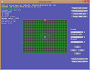
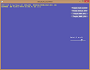

XAudio2 Win32 Samples
This is a collection of the DirectX SDK's original XAudio2 samples updated to use Visual Studio 2012 and the Windows SDK 8.0 without any dependencies on legacy DirectX SDK content. These samples are Win32 desktop DirectX 11.0 applications for Windows 8, Windows 7, and Windows Vista Service Pack 2 with the DirectX 11.0 runtime.
This is based on the the legacy DirectX SDK (June 2010) Win32 desktop samples running on Windows Vista, Windows 7, and Windows 8.x. This is not intended for use with Windows Store apps or Windows RT, although the techniques are applicable.
For Windows Store samples using XAudio2, see XAudio2 audio file playback sample and XAudio2 audio stream effect sample
Description
XAudio2BasicSound

This sample demonstrates the XAudio2 API by showing you how to initialize the XAudio2 engine, create a mastering voice, and play sample files.
The basic steps taken by the sample are as follows:
- Initialize the XAudio2 engine by calling the XAudio2Create method. At this point, you can set some basic run-time parameters, and set the notification callback.
- Create a mastering voice using the IXAudio2::CreateMasteringVoice method. This method controls the final mix format used for all audio processing within the application.
- Create and play three WAV files.
- Locate the WAV file to load.
- Read in the WAV file and sample data using a sample helper class.
- Create a source voice based on the format of the loaded WAV file. By default, the source voice will be linked to the first created mastering voice, so you don't need a voice send list.
- To submit data to the source voice, create an XAUDIO2_BUFFER structure, specifying some play parameters.
- Submit data to the source voice by means of the function IXAudio2SourceVoice::SubmitSourceBuffer. Note that the sample data is not duplicated by XAudio2, so the pAudioData buffer must remain available for the duration of play.
- Start playback of the source voice, and perform a simple loop to detect when the playback has completed.
- Clean up the source voice and associated sample data.
- Clean up by releasing the XAudio2 engine.
XAudio2AsyncStream

This sample shows you how to play streaming audio using asynchronous file I/O and the XAudio2 API.
Note: Originally called "XAudio2BasicStream" in the legacy DirectX SDK.
Playing streaming audio with XAudio2 is very easy. You do not need to create extra threads or maintain tight control of timing. Most of the hard work is already done for you by the file system and XAudio2. The file system handles loading data in the background, while XAudio2 manages the audio hardware, and makes sure that it receives a steady stream of data. The XAudio2 system even allows you to queue up data buffers, which eliminates the worry about getting too far ahead of the audio. Your only job is to direct this process.
First, you must decide on two important values:
- The amount of data to request from the file system at a given time.
- The number of data buffers to queue up for playback.
The exact values you use for these variables will depend on two factors: the amount of memory you want to use for streaming, and the load that the rest of your application places on the CPU and storage system. For instance, if other parts of your application make heavy use of the hard drive, then less hard drive capacity will be available for streaming audio. In this case, you will need to increase your buffer size or the number of buffers used.
Next, create the XAudio2 engine and a playback voice. The XAudio2BasicSound sample demonstrates how to do this.
After everything is set up, the streaming process is relatively straightforward:
- Call ReadFile to start an asynchronous read.
- When the read finishes, check the number of buffers in the playback queue.
- As soon as the number of buffers in the playback queue falls below your predetermined maximum value, submit the data you received from the last asynchronous read.
- Call ReadFile again to start another read.
There are two basic conditions that must be monitored during stream playback: the status of the file reads, and the number of buffers in the playback queue. Of course, it would be inefficient to poll these conditions continuously. There are many different ways to notify you when these conditions have changed, so that you can move to the next stage in the streaming process. This sample shows one of the simpler ways to track these conditions.
Note that in order to use asynchronous buffered file I/O, the source data must be aligned to the size of the disk sector. This is the fastest way to read data on Windows platforms. General .WAV files do not meet this requirement, so this sample uses XACTBLD to prepare the sample .WAV files into a wave bank. By using the streaming wave bank property, XACTBLD aligns the audio data to meet the alignment requirement for async I/O. The sample parses the wave bank file to determine the format and position of the audio data. It then reopens the file for an asynchronous unbuffered read that uses this extracted information. The XACT runtime is not used by this sample. Any custom audio tool can provide audio data to meet the alignment requirement, such as the XWBTOOL included in this package.
XAudio2Sound3D

This sample shows you how to use the X3DAudio API with XAudio2 for playing spatialized audio.
The following is a quick overview of the basic steps taken by the sample:
- Initialize the XAudio2 engine and a mastering voice. Also, using the sample framework, initialize selected UI elements.
- Initialize the X3DAudio library with a speaker channel configuration that matches the mastering voice channel count.
- Create a submix voice and attach a reverb effect. The reverb effect parameter set is provided by using the I3DL2 preset conversion routine. For simplicity, the submix voice runs at the native output rate, and sends its output to the mastering voice.
- Create and start playing a single (mono) source voice as a looping sound, sending its output directly to the mastering voice and to the reverb submix voice.
- Represent and control the X3DAudio emitter and listener objects on a simplified X/Z grid to demonstrate spatialized audio.
- Draw the current positions of the emitter and listener at each frame of rendering.
- Apply parameter control changes to update the UI elements during each frame.
- Perform spatialized audio computations and updates during each frame update.
- Based on frame-elapsed time, update the emitter and listener objects with new positions and velocity information.
- Call the X3DAudioCalculate method to compute the resulting DSP control settings.
- Pass DSP settings to the source voice via the IXAudio2Voice::SetOutputMatrix and IXAudio2SourceVoice::SetFrequencyRatio functions.
XAudio2CustomAPO

This sample shows you how to create and use custom APOs with XAudio2.
The sample creates a simple XAudio2 playback graph, adding a series of custom APOs to the playing source voice:
- SimpleAPO applies a simple gain factor by multiplying the sample values processed.
- MonitorAPO passes the audio data to the main thread by way of a lock-free communication channel for visualization by the application.
The APOs are implemented by using a helper template class, SampleAPOBase, that handles shared registration, class factory, and parameter handling operations. Use of this template class is not required, but it is used to simplfy the sample.
XAudio2Enumerate (NEW)

This sample shows how to enumerate audio devices and initialize an XAudio2 mastering voice for a specific device.
XAudio2MFStream (NEW)

This samples uses Media Foundation to decode a media audio file (which could be compressed with any number of codecs) and streams it through an XAudio2 voice. This technique is most useful for XAudio 2.8 on Windows 8.x which only supports PCM and ADPCM, and not more agressive lossy compressed schemes which are supported by Media Foundation.
Note that this assumes you need to perform some kind of further processing, 3D positioning, or APO to the streamed audio. If it is just being played back in the background, it would be more efficient to make use of IMFMediaSession to play the audio directly potentially with hardware offload.
XAudio2WaveBank (NEW)
This sample shows how to play in-memory audio using an XACT-style wave bank.
XACT wave banks are a binary file containing 1 or more .WAV files packaged together along with metadata information. The XAudio2AsyncStream sample makes use of XACT streaming wave banks, while this sample uses XACT in-memory wave banks.
The XACT runtime is not used by this sample. The audio data can be authored using the XACT tool in the legacy DirectX SDK, or with the XWBTOOL in this package.
Utilities
- The Common folder contains a WAVFileReader.h/.cpp module which can be used to load a .WAV file for playback with XAudio2. It optionally returns loop-point information as well as supporting the standard PCM, MS-ADPCM, and WAVEFORMATEXTENSIBLE formats supported by XAudio2.
- The Common folder contains a WaveBankReader.h/.cpp module which is used by the XAudio2AsyncStream and XAudio2WaveBank samples. It is used to parse XACT3-style wave banks.
- The XBWTool command-line tool is a simple way to build XACT-style wave banks without using the legacy DirectX SDK's XACT tool or XACTBLD command-line tool. It can be used to build .xwb files suitable for both the XAudio2AsyncStream or XAudio2WaveBank samples, and are binary compatible with the XACT3 DirectX SDK (June 2010) wave bank format. This tool cannot generate XACT sound banks.
Dependancies
A build using the standard vcxproj files with VS 2012 or VS 2013 will make Win32 desktop applications that are compatible with Windows 8.x. They use the built-in XAudio 2.8 DLLs. The resulting binaries are not compatible with Windows Vista or Windows 7, although there are alternative project files included that will support Windows Vista and Windows 7.
XAudio2Sound3D and XAudio2CustomAPO are both DXUT-based samples. DXUT-based samples typically make use of runtime HLSL compilation. Build-time compilation is recommended for all production Direct3D applications, but for experimentation and samples development runtime HLSL compiliation is preferred. Therefore, the D3DCompile*.DLL must be available in the search path when these programs are executed.
- When using the Windows 8.x SDK and targeting Windows Vista or later, you can include the D3DCompile_46 or D3DCompile_47 DLL side-by-side with your application copying the file from the REDIST folder.
%ProgramFiles(x86)%\Windows kits\8.0\Redist\D3D\arm, x86 or x64
%ProgramFiles(x86)%\Windows kits\8.1\Redist\D3D\arm, x86 or x64
Building for Windows Vista / Windows 7
XAudio 2.7 supports Windows Vista, Windows 7, and Windows 8.x but requires the legacy DirectX SDK. These samples can build with VS 2012 or VS 2013 using the legacy DirectX SDK for down-level support. The *_DXSDK.vcxproj files are set up to include the needed references to DXSDK_DIR paths, and include setting the _WIN32_WINNT value to 0x0600 for down-level support.
Due to header-name collision, various #include statements will need to be updated to reflect the install path of the legacy DirectX SDK on your system.
Where is the DirectX SDK (2013 Edition)?